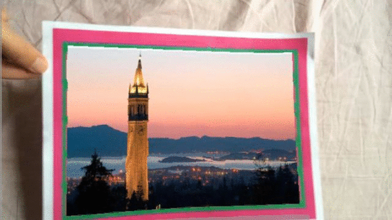
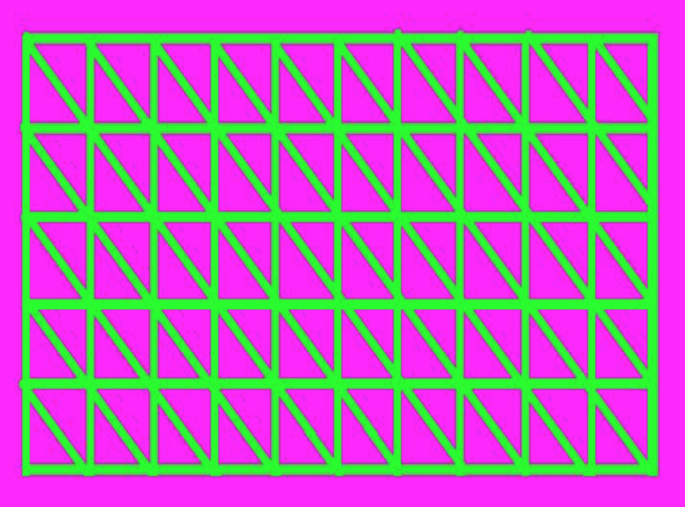
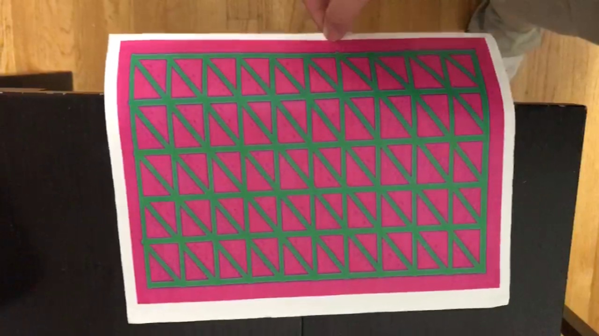
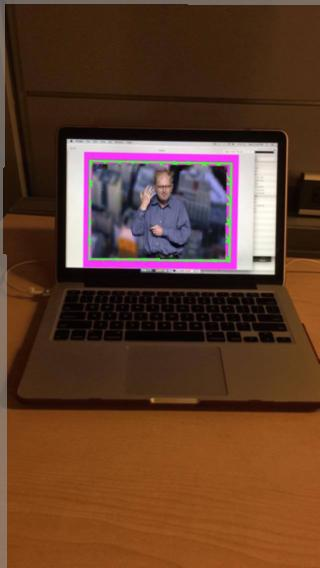
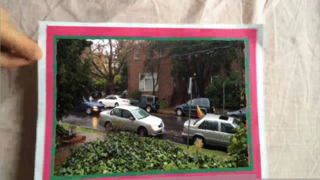

Rendering onto deformable surface using visible ink
by Andrew Liu

Introduction
The original inspiration for this project came from Ishikawa Watanabe Laboratory when they released a demo video showcasing their high speed dynamic projection. In their implementation, they used a 1000 FPS camera to track the motion of a infrared mesh-grid ink. As of December 10th, 2016, they have not publicly released the algorithm they used to achieve the high speed results.
In addition to the applications mentioned in Ishikawa Watanabe Laboratory's video, these techniques can be used to do reverse template imaging. Take an unknown deformed surface with an image. Project a mesh grid onto the surface and use the inverse algorithm to get the unknown image when viewed a flat surface.
I introduced a couple of extra constraints on top of replicating their results. Instead of using a high speed camera, I used an iPhone 5S as my capturing device and in place of the infrared ink I used green mesh pattern with a red-blue background. Using max value for each channel, we get maximal distinguishing power on the visible light spectrum.

Template grid
Deformed sample image shot on iPhone
Algorithm
There are two parts of this workflow that I tried to solve. The first one is isolating and aligning the template mesh grid with the mesh grid taken from the iPhone.
Mesh Isolation:
I approached this problem by looking at some energy function of the image. Specifically, I was looking for a function which responded high to high green pixels and penalized red-blue values everywhere else. The first half reads high for exclusively green pixels and the second penalizes hard for white pixels which also have a high green component. Then I threshold the energy function to extract the mesh grid.
Next I align the mean of the high response pixels and the 20th percentile x - y values. This is important for the next step when I compute a warp from one image to the other.

Captured video of deformed surface, extracted mesh grid
Pixel Mapping:
In order to achieve the final result, we need a dense pixel mapping from one to the other. Most warping schemes use parameters to define the warp. Because the surface is deformed in highly complex ways, we would need a lot of parameters to do a parameterized warp. Instead, I use Liu, Yuen, and Torralba's Dense SIFT Flow algorithm to find a vector field that maps pixels from one image to another.

Pixel flow-field generated over the video taken above.
Results

Rendering Professor Efros onto a mesh at a distance.
Static image of the Berkeley Campanile rendered onto a surface.

Static image of Professor Efros rendered onto the same surface.

Rendering onto a new surface. Some glitching of the top right corner due to parameters used in SIFT Flow.

Rendering a short video taken in Berkeley, CA

Rendering a short video taken in Berkeley, CA